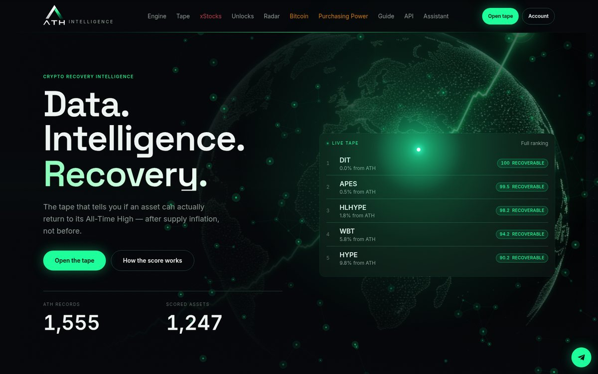
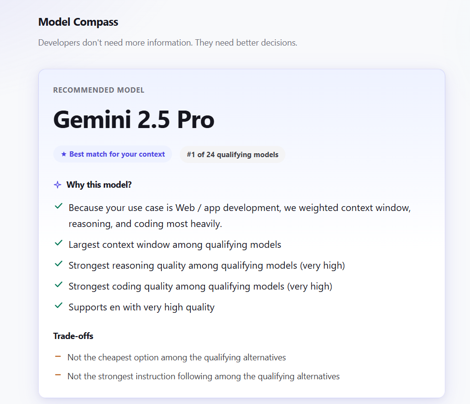
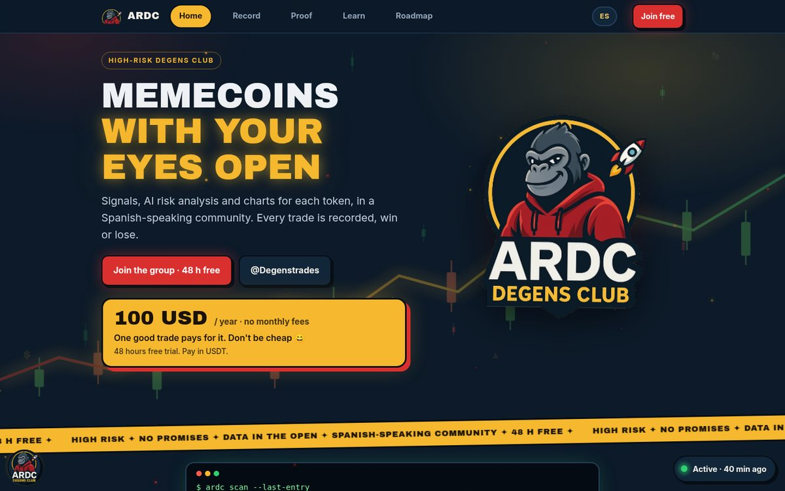
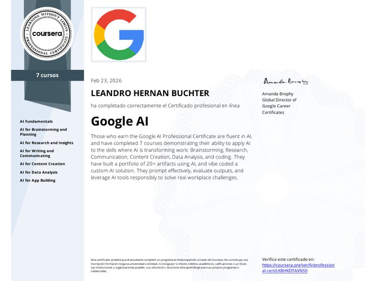
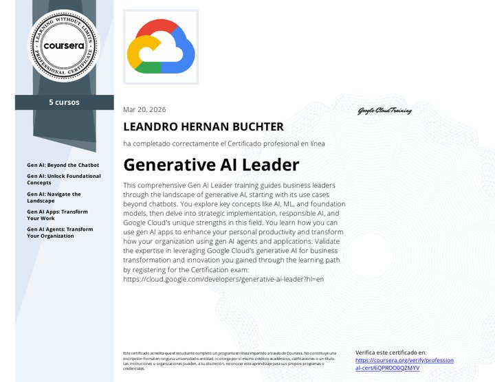
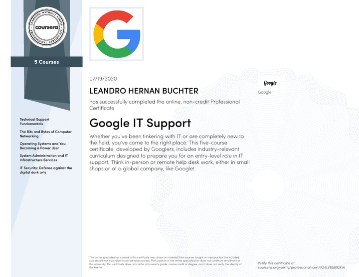

◆
Crypto data & APIsDatos cripto y APIs
Prices, ATH, unlocks, sentiment and on-chain data, stored and served through your own REST API.Precios, ATH, unlocks, sentimiento y datos on-chain, guardados y servidos por tu propia API REST.
Available for freelance projectsDisponible para proyectos freelance
I build complete systems for crypto projects and tech teams: market data, Telegram bots, AI agents and automations — from the data source to the server where it runs. Construyo sistemas completos para proyectos cripto y equipos tech: datos de mercado, bots de Telegram, agentes de IA y automatizaciones — desde la fuente de datos hasta el servidor donde corre.
01 · What I doQué hago
10+ years in tech: I started in 2015 in IT technical support for companies, and in 2020 I founded LCA ITECH and went all-in on crypto. Today I build products with Python, APIs and AI. So I can connect the data, the backend, the AI and the infrastructure — and keep it running. 10+ años en tecnología: empecé en 2015 en soporte técnico IT para empresas y en 2020 fundé LCA ITECH y me metí de lleno en cripto. Hoy construyo productos con Python, APIs e IA. Por eso puedo conectar los datos, el backend, la IA y la infraestructura — y mantenerlo funcionando.
Prices, ATH, unlocks, sentiment and on-chain data, stored and served through your own REST API.Precios, ATH, unlocks, sentimiento y datos on-chain, guardados y servidos por tu propia API REST.
LLM agents with RAG over your docs, using the right model for each task (Gemini, Claude, OpenAI) to control cost.Agentes con RAG sobre tu documentación, usando el modelo correcto para cada tarea (Gemini, Claude, OpenAI) para controlar el costo.
Bots, webhooks and workflows with retries, logging, deduplication, alerts and error recovery.Bots, webhooks y flujos con reintentos, logging, deduplicación, alertas y recuperación de errores.
Deploy on GCP / Linux VMs with Docker, SSH, Git, backups and monitoring. It doesn't end at "it works on my laptop".Deploy en GCP / VMs Linux con Docker, SSH, Git, backups y monitoreo. No termina en "en mi máquina anda".
02 · ServicesServicios
Fixed price per project, agreed after a short call. Prices are a starting point in USD. Precio cerrado por proyecto, acordado después de una llamada corta. Los precios son un punto de partida en USD.
P1 · 1–2 weekssemanas
Telegram bot for your community: price alerts, distance to ATH, token unlocks, Fear & Greed, whale moves and a daily summary.Bot de Telegram para tu comunidad: alertas de precio, distancia al ATH, token unlocks, Fear & Greed, movimientos de ballenas y resumen diario.
fromdesde USD 600
P2 · 3–5 weekssemanas
Your own market data pipeline, database, REST API and web dashboard, based on the ATH Intelligence engine (white-label).Tu propio pipeline de datos de mercado, base de datos, API REST y dashboard web, basado en el motor de ATH Intelligence (marca blanca).
fromdesde USD 2,500
P3 · 2–3 weekssemanas
Telegram onboarding, referral links, UID checks (when the exchange API allows it), VIP access and conversion tracking.Onboarding en Telegram, links de referido, verificación de UID (cuando la API del exchange lo permite), acceso VIP y tracking de conversión.
fromdesde USD 1,200
P4 · 2–4 weekssemanas
AI agent for Telegram/Discord that answers from your docs in EN/ES/PT, with anti-scam guardrails and human handoff.Agente de IA para Telegram/Discord que responde desde tu documentación en ES/EN/PT, con protecciones anti-scam y derivación a un humano.
fromdesde USD 1,500
P5 · monthlymensual
A monthly block of hours to maintain and grow your bots, integrations, data pipelines and infrastructure. Weekly report.Un bloque mensual de horas para mantener y hacer crecer tus bots, integraciones, pipelines de datos e infraestructura. Reporte semanal.
fromdesde USD 1,500/monthmes
P6 · 1–3 weekssemanas
Automate 1–3 repetitive processes: forms, emails or messages classified with AI and sent to your sheets or CRM, reports and alerts.Automatizo 1–3 procesos repetitivos: formularios, mails o mensajes clasificados con IA y enviados a tus planillas o CRM, reportes y alertas.
fromdesde USD 800
P7 · 2–4 weekssemanas
An assistant over your internal docs, plus a comparison of models by cost, language and volume to lower the cost per answer.Un asistente sobre tu documentación interna, más una comparación de modelos por costo, idioma y volumen para bajar el costo por respuesta.
fromdesde USD 2,000
03 · ProjectsProyectos

Crypto recovery intelligence, live at athintelligence.pro. It answers one question: can an asset really return to its all-time high after the supply issued since then? It stores the market cap and supply at each ATH, scores every asset with a deterministic Recovery Score and serves it all over a REST API. Built end to end: data collection, backend, database, UI and deploy. Inteligencia de recuperación cripto, online en athintelligence.pro. Responde una pregunta: ¿puede un activo volver de verdad a su máximo histórico después del supply que se emitió desde entonces? Guarda el market cap y el supply de cada ATH, puntúa cada activo con un Recovery Score determinista y expone todo por una API REST. Hecha de punta a punta: recolección de datos, backend, base de datos, UI y deploy.
Also: Cap lab (price at another market cap), developer docs with an x-api-key REST API and an assistant for the API endpoints. Además: Cap lab (precio a otro market cap), docs para desarrolladores con API REST por x-api-key y un asistente para los endpoints de la API.

An open-source decision engine that helps developers choose the right AI model for their use case, budget, priorities, language and volume. Explainable, deterministic recommendations — not opinions. Un motor de decisión open source que ayuda a elegir el modelo de IA correcto según caso de uso, presupuesto, prioridades, idioma y volumen. Recomendaciones explicables y deterministas — no opiniones.
Python 3.11FastAPIpytestPre-1.0
github.com/LCAITECH/model-compass ↗
A Spanish-speaking community for high-risk crypto, focused on memecoin trading, which I co-run with a partner. Risk comes first: before every entry we check liquidity, holders, contract permissions (mint, freeze, honeypot) and locked liquidity. There is a free token analyzer with AI risk analysis, every trade goes into a public record (wins and losses), and the site has anti-scam security guides. No promises of returns. Comunidad de habla hispana de cripto de alto riesgo, enfocada en trading de memecoins, que co-dirijo con un socio. Primero el riesgo: antes de cada entrada se revisan liquidez, holders, permisos del contrato (mint, freeze, honeypot) y liquidez bloqueada. Tiene un analizador de tokens gratuito con análisis de riesgo con IA, cada trade queda en un registro público (ganadores y perdedores) y la web tiene guías de seguridad anti-scam. Sin promesas de rentabilidad.
MemecoinsSolana · BNB Chain · BaseAI risk analysisAnálisis de riesgo con IAPublic trade recordRegistro público de tradesAnti-scam
ardc.club ↗LCA ITECH is the company I founded in 2020. LCA Trading is its crypto trading and education community (since 2022) on Telegram, X, Instagram, YouTube and Discord — where I build and test in real life: Telegram bots, dashboards, exchange integrations and referral systems. LCA ITECH es la empresa que fundé en 2020. LCA Trading es su comunidad de trading y educación cripto (desde 2022) en Telegram, X, Instagram, YouTube y Discord — donde construyo y pruebo en la vida real: bots de Telegram, dashboards, integraciones con exchanges y sistemas de referidos.
Telegram botsDashboardsExchange APIsReferralsReferidos
x.com/LCA_ITECH ↗An internal web interface with AI routing: each request goes to the most suitable model (Gemini, Claude or OpenAI) depending on the task and the cost. Una interfaz web interna con ruteo de IA: cada consulta va al modelo más adecuado (Gemini, Claude u OpenAI) según la tarea y el costo.
LLM routingGeminiClaudeOpenAI
A public bot to try my services live: prices, distance to ATH, token unlocks, Fear & Greed, whale alerts and an AI agent that answers crypto FAQs. Un bot público para probar mis servicios en vivo: precios, distancia al ATH, token unlocks, Fear & Greed, alertas de ballenas y un agente de IA que responde preguntas frecuentes sobre cripto.
/price/precio/ath/unlocks/feargreed/ask
04 · JourneyTrayectoria
10+ years in tech. Every step added a layer: infrastructure, then crypto and DeFi, then automation, then AI. 10+ años en tecnología. Cada etapa sumó una capa: infraestructura, después cripto y DeFi, después automatización, después IA.
2015 – 2020
IT support company in Buenos Aires. Five years solving real problems for businesses and users — the base of how I think about systems that must not fail.Empresa de soporte IT en Buenos Aires. Cinco años resolviendo problemas reales de empresas y usuarios — la base de cómo pienso sistemas que no se pueden caer.
IT supportSoporte ITBuenos AiresGoogle IT Support Cert. (2020)
2020
I left the company to build on my own and founded LCA ITECH.Dejé la empresa para emprender y fundé LCA ITECH.
LCA ITECH
2020 → today2020 → hoy
Binance launchpools, yield farming on Beefy, spot and futures. I also went through scams and rugpulls: that taught me to spot risks early, and today I design bots and systems with an anti-scam mindset.Launchpools de Binance, yield farming en Beefy, spot y futuros. También pasé por scams y rugpulls: eso me enseñó a detectar riesgos temprano, y hoy diseño bots y sistemas con mentalidad anti-scam.
Binance LaunchpoolBeefyDeFiAnti-scam mindsetMentalidad anti-scam
2020 → today2020 → hoy
Invited to LABITCONF events in Buenos Aires. First partnership: BingX partner.Invitado a eventos de LABITCONF en Buenos Aires. Primer partnership: partner de BingX.
LABITCONFBingX Partner
2022 → today2022 → hoy
Crypto trading and education community on Telegram, X, Instagram, YouTube and Discord.Comunidad de trading y educación cripto en Telegram, X, Instagram, YouTube y Discord.
TelegramDiscordXYouTube
Then → todayLuego → hoy
I started automating the community: Telegram bots, exchange integrations, referral flows and alerts.Empecé a automatizar la comunidad: bots de Telegram, integraciones con exchanges, flujos de referidos y alertas.
Telegram Bot APIPythonExchange APIsAPIs de exchanges
NowHoy
With a partner, I co-run a high-risk crypto community focused on memecoin trading: risk checks before every entry, a public trade record with wins and losses, and anti-scam guides.Con un socio co-dirijo una comunidad cripto de alto riesgo enfocada en trading de memecoins: chequeo de riesgo antes de cada entrada, registro público de trades con ganadores y perdedores, y guías anti-scam.
MemecoinsRisk managementGestión de riesgoAnti-scam
ardc.club ↗NowHoy
LLM agents and AI routing (LCA-GPT), the ATH Intelligence data platform (live) and the open-source Model Compass. Google AI and Google Cloud Generative AI Leader certificates (2026).Agentes con LLMs y ruteo de IA (LCA-GPT), la plataforma de datos ATH Intelligence (online) y el proyecto open source Model Compass. Certificados Google AI y Google Cloud Generative AI Leader (2026).
ATH IntelligenceModel CompassLCA-GPTFastAPIGCP
athintelligence.pro ↗05 · Stack
PythonFastAPIREST APIsWebhooksSQLTypeScript
OpenAIClaudeGeminiRAGAI agentsAgentes de IAModel routingRuteo de modelos
Exchange APIsAPIs de exchangesSpot & perpsDeFiBlockchain dataReferral systemsSistemas de referidos
Telegram Bot APIMakeGoogle SheetsRetries · logging · alertsReintentos · logging · alertas
Google Cloud (GCP)LinuxDockerSSHGitWindows ServerVMwareHyper-V
06 · Community experienceExperiencia en comunidades
I've been in crypto since 2020. Since 2022 I run the LCA Trading community, and today I also co-run ARDC, a memecoin trading community, with a partner. I share crypto, trading and AI content on X. I know what members ask, how scams work and what admins need. Estoy en cripto desde 2020. Desde 2022 llevo adelante la comunidad LCA Trading y hoy también co-dirijo con un socio ARDC, una comunidad de trading de memecoins. Comparto contenido de cripto, trading e IA en X. Sé qué pregunta la gente, cómo funcionan las estafas y qué necesitan los admins.
07 · CertificationsCertificaciones
Google professional certificates on Coursera, issued to Leandro Hernan Buchter. Each one has a public verification link. Certificados profesionales de Google en Coursera, a nombre de Leandro Hernan Buchter. Cada uno tiene su link público de verificación.

Google · via CourseraGoogle · vía Coursera

Google Cloud · via CourseraGoogle Cloud · vía Coursera

Google · via CourseraGoogle · vía Coursera
08 · ContactContacto
Tell me what you need in 2–3 lines. I will reply with questions or a first idea. Contame qué necesitás en 2–3 líneas. Te respondo con preguntas o una primera idea.